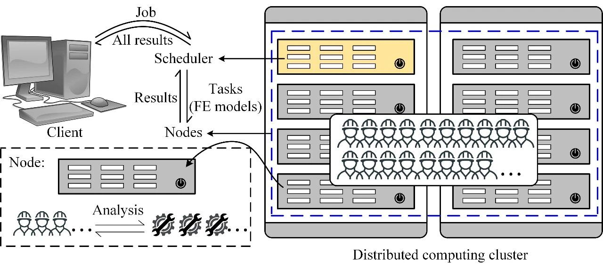

新论文：基于集群计算的大跨斜拉桥精细有限元模型更新
论文链接：
https://doi.org/10.1002/eqe.3270
0
太长不看版
精细有限元模型在大型工程结构分析中发挥越来越重要的作用。但是，由于大型结构体量大、构件多、连接复杂，很多人经常有一个疑问：“我建的有限元模型到底对不对？和试验或者实际结构能不能对上？”
为此，本文提出了一种适用于大型工程结构精细有限元模型的模型更新方法，以苏通长江大桥振动台试验为例，通过集群和并行计算技术，将模型更新过程中的大量数值分析工作分配到CPU计算集群上，顺利完成该大跨斜拉桥模型的快速更新。通过对比更新后模型的动力时程响应与试验实测结果进一步验证了模型的准确性。
研究对象
本文研究对象为苏通桥缩尺振动台试验模型，模型缩尺比为1:35。试验由同济大学完成，采用同济大学多台联动多功能振动台，缩尺后模型总长59.66米，塔高8.58米，采用4个振动台，结构底部固结，如图1所示。

图1 苏通大桥振动台试验
精细有限元模型
基于振动台试验图纸，采用通用有限元软件MSC.Marc建立了相应的精细有限元模型，其中主塔和桥墩采用分层壳单元，箱梁采用弹性壳单元，基础采用实体单元，斜拉索采用桁架单元，支座采用弹簧单元模拟，如图2所示，最终模型包含16,000个单元。

图2 试验有限元模型
研究工况和试验数据
本研究考虑振动台试验的横向固结工况，采用试验中的E1（0.1g白噪声）和E2（0.1g场地波）工况数据开展研究。其中E1工况数据用于模型更新，更新后向模型输入E2工况地震动，计算响应并与实测结果进行对比验证。基于E1工况数据，采用随机子空间识别方法得到斜拉桥的振型和阻尼比信息如图3所示，将上述动力特性用于构建模型更新所需要的目标函数。

图3 斜拉桥部分传感器布置和模态识别
2
基于计算集群的模型更新技术
为了更新大型结构的精细有限元模型，本文基于MATLAB、MSC.Marc和Python编写了相关的模型更新程序，程序计算流程如图4所示。

图4 模型更新流程
程序并行和集群计算
本文采用遗传算法作为更新算法，计算时，每一代种群的个体都是一个包含独立参数的有限元模型，将每一代种群中个体模型的有限元分析工作采用并行的方式分配给不同CPU核心计算，以提高程序计算效率。同时，采用5台Intel Xeon E5-2670 v3 @2.30GHz双路CPU服务器搭建一个包含115个核心的计算集群，基于MATLAB编写相应的集群计算程序，进一步提升程序计算效率，如图5-6所示，相关部分程序代码可以查阅原文。

图5 模型更新程序的并行化

图6 基于集群的模型更新程序示意图
3
案例研究
基于上述苏通桥试验精细有限元模型和模型更新程序，采用E1工况的模态识别结果开展了模型更新工作，计算过程如图7所示，其中每一种颜色代表遗传算法的一步迭代，每一个数据点为一次完整的有限元分析计算后得出的目标函数值，整个更新过程包括3565次苏通桥模型的模态分析，基于上述115核计算集群需耗时6567秒（1.82小时），相比基于单核的计算耗时（8天11小时）效率提升约为111倍，模型更新结果与基于E1工况数据的模态识别结果对比如表1所示。

图7 模型更新过程
表1 模型更新结果与模态识别结果对比

模型验证
对上述更新后的模型输入E2工况地震动，进行动力时程分析，更新前后模型计算响应与试验结果对比如图8所示（仅展示北塔位移时程，传感器编号见图3，其他结果敬请访问原文），可以看到更新后模型计算精度大幅提升。

图8 模型更新前后北塔计算位移时程对比
4
结论与展望
本研究提出了一种基于集群和并行计算技术的大型结构精细有限元模型更新方法，以苏通长江大桥振动台试验为例，实现了大跨斜拉桥的快速模型更新，通过时程分析与振动台试验进行了对比验证。
本研究同香港理工大学徐幼麟教授，同济大学李建中教授、管仲国教授及福州大学林楷奇博士合作完成，计算集群所用服务器由香港理工大学ITS（Information Technology Services）提供，更多相关内容欢迎下载原文。

林楷奇
---End--
相关研究
新论文：抗震&防连续倒塌：一种新型构造措施
长按识别二维码，关注我们的科研动态